Ilustración por Emilio Morones.
Introducción
Esta sección se mostrará cómo utilizar la visualización y la transformación para explorar sus datos de manera sistemática, una tarea que los estadísticos denominan análisis exploratorio de datos o EDA (por sus siglas en inglés) para abreviar. EDA es un ciclo iterativo.
Generar preguntas sobre tus datos.
Buscar respuestas visualizando, transformando y modelando sus datos.
Utilizar lo que aprendas para refinar tus preguntas y/o generar nuevas preguntas.
EDA no es un proceso formal con un conjunto estricto de reglas. Más que nada, EDA es un estado mental. Durante las fases iniciales de EDA, debe sentirse libre de investigar cada idea que se le ocurra. Algunas de estas ideas se desarrollarán y otras serán callejones sin salida. A medida que continúe su exploración, se concentrará en algunas áreas particularmente productivas que eventualmente redactará y comunicará a los demás.
EDA es una parte importante de cualquier análisis de datos, incluso si las preguntas se le entregan en bandeja, porque siempre debe investigar la calidad de sus datos. La limpieza de datos es solo una aplicación de EDA: usted hace preguntas sobre si sus datos cumplen con sus expectativas o no. Para realizar la limpieza de datos, deberá implementar todas las herramientas de EDA: visualización, transformación y modelado.
Requisitos previos
En este capítulo, combinaremos lo que hemos aprendido sobre dplyr y ggplot2 para hacer preguntas de forma interactiva, responderlas con datos y luego hacer nuevas preguntas.
library(dplyr)
library(ggplot2)Preguntas
"No hay preguntas estadísticas de rutina, solo rutinas estadísticas cuestionables". - SIR DAVID COX
"Mucho mejor una respuesta aproximada a la pregunta correcta, que a menudo es vaga, que una respuesta exacta a la pregunta incorrecta, que siempre se puede hacer precisos". - John TukeyEl objetivo durante EDA es desarrollar una comprensión de nuestros datos. La forma más fácil de hacer esto es usar preguntas como herramientas para guiar la investigación. Cuando hace una pregunta, la pregunta enfoca su atención en una parte específica de su conjunto de datos y te ayuda a decidir qué gráficos, modelos o transformaciones para hacer.
EDA es fundamentalmente un proceso creativo. Y como la mayoría de los procesos creativos, la clave para hacer preguntas de calidad es generar una gran cantidad de preguntas. Es difícil pedir preguntas reveladoras al inicio de su análisis porque no sabe qué conocimientos están contenidos en su conjunto de datos. Por otro lado, cada nueva pregunta que tu le solicitas, le expondrá un nuevo aspecto de nuestros datos y aumentará su oportunidad de hacer un descubrimiento.
Se profundizar rápidamente en las partes más interesantes de nuestros datos, y desarrollar un conjunto de preguntas provocadoras de pensamiento: si se realiza un seguimiento de cada pregunta con una nueva pregunta basada en lo que encuentra.
No hay ninguna regla sobre qué preguntas debe pedir a guiar tu investigación. Sin embargo, dos tipos de preguntas siempre serán útiles para hacer descubrimientos dentro de los datos. Puedes publicar estas preguntas como:
¿Qué tipo de variación ocurre dentro de mis variables?
¿Qué tipo de covariación ocurre entre mis variables?
Explicarémos qué son las variaciones y la covariación, y le mostraremos varias formas de responder a cada pregunta. Para facilitar la discusión, definamos algunos términos:
Una variable es una cantidad, calidad o propiedad que puede medir.
Un valor es el estado de una variable cuando lo mide. El valor de una variable puede cambiar de medida a la medición.
Una observación: es un conjunto de mediciones realizadas en condiciones similares (generalmente hace todas las mediciones en una observación al mismo tiempo y en el mismo objeto).
Una observación contendrá varios valores, cada uno asociado con una variable diferente. A veces se referirá a una observación como punto de datos.
Los datos tabulares son un conjunto de valores, cada uno asociado con una variable y una observación. Los datos tabulares están ordenados si se coloca cada valor en su propia “celda”, cada variable en su propia columna, y cada observación en su propia fila.
Hasta ahora, todos los datos que has visto ha sido ordenado. En la vida real, la mayoría de los datos no están ordenados, así que volveremos a estas ideas nuevamente en los datos ordenados.
Variación
La variación es la tendencia de los valores de una variable para cambiar de la medición a la medición.
Puedes ver la variación fácilmente en la vida real; Si mide alguna variable continua dos veces, obtendrá dos resultados diferentes. Esto es cierto incluso si mide las cantidades que son constantes, como la velocidad de la luz. Cada una de sus mediciones incluirá una pequeña cantidad de error que varía de la medición a la medición.
Las variables categóricas también pueden variar si se mide en diferentes sujetos (por ejemplo, los colores de los ojos de diferentes personas), o diferentes momentos (por ejemplo, los niveles de energía de un electrón en diferentes momentos).
Cada variable tiene su propio patrón de variación, que puede revelar información interesante. La mejor manera de entender ese patrón es visualizar la distribución de los valores de la variable.
Visualización de distribuciones
La forma en que visualiza la distribución de una variable dependerá de si la variable es categórica o continua. Una variable es categórica si solo puede tomar uno de un pequeño conjunto de valores.
En R, las variables categóricas generalmente se guardan como factores o vectores de caracteres. Para examinar la distribución de una variable categórica, use un gráfico de barras:
ggplot(data = diamonds) +
geom_bar(mapping = aes(x = cut))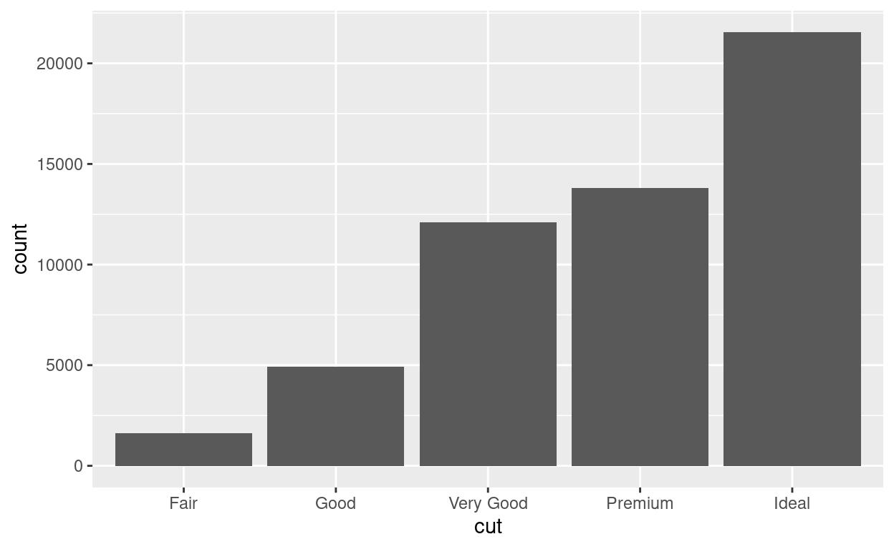
La altura de las barras muestra cuántas observaciones ocurrieron con cada valor X. Puede calcular estos valores manualmente con dplyr ::count():
diamonds %>%
count(cut)Una variable es continua si puede tomar cualquiera de un conjunto infinito de valores ordenados. Los números y las caducidad son dos ejemplos de variables continuas. Para examinar la distribución de una variable continua, use un histograma:
ggplot(data = diamonds) +
geom_histogram(mapping = aes(x = carat), binwidth = 0.5)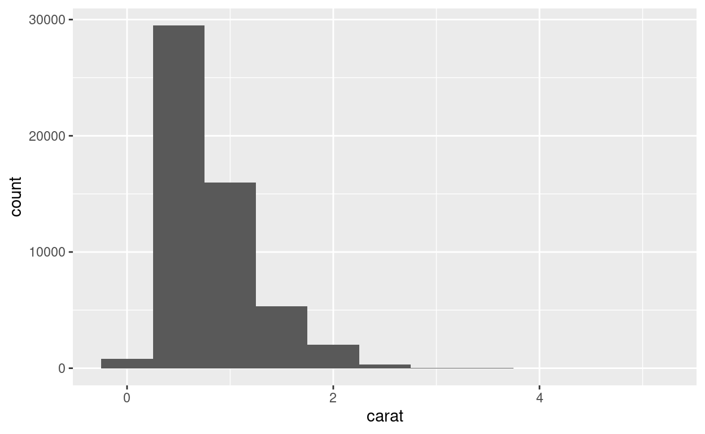
Se puede calcular esto a mano combinando dplyr::count() y ggplot2::cut_width():
diamonds %>%
count(cut_width(carat, 0.5))Un histograma divide el eje X en contenedores igualmente espaciados y luego utiliza la altura de una barra para mostrar el número de observaciones que caen en cada contenedor. En el gráfico anterior, la barra más alta muestra que casi 30,000 observaciones tienen un valor de quilates entre 0.25 y 0.75, que son los bordes izquierdo y derecho de la barra.
Puede configurar el ancho de los intervalos en un histograma con el argumento binwidth, que se mide en las unidades de la variable X. Siempre debe explorar una variedad de anchos bin cuando se trabaja con histogramas, ya que diferentes binwidths pueden revelar diferentes patrones.
Por ejemplo, aquí es la forma en que se ve la gráfica de arriba cuando nos acercamos a los diamantes con un tamaño de menos de tres quilates y elige un binwidth más pequeño.
smaller <- diamonds %>%
filter(carat < 3)
ggplot(data = smaller, mapping = aes(x = carat)) +
geom_histogram(binwidth = 0.1)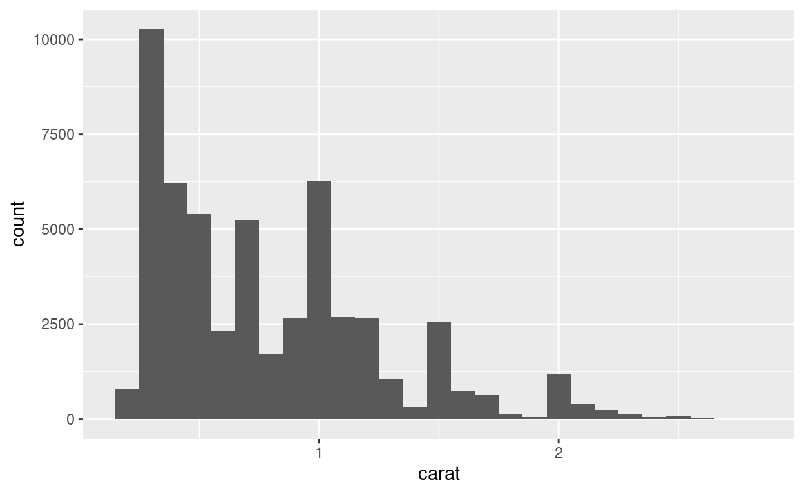
Si desea superponer múltiples histogramas en la misma gráfica, recomiendo usar geom_freqpoly() en lugar de geom_histogram().
geom_freqpoly() realiza el mismo cálculo que geom_freqpoly(), pero en lugar de mostrar los conteos con las barras, usa líneas. Es mucho más fácil entender las líneas superpuestas que las barras.
ggplot(data = smaller, mapping = aes(x = carat, colour = cut)) +
geom_freqpoly(binwidth = 0.1)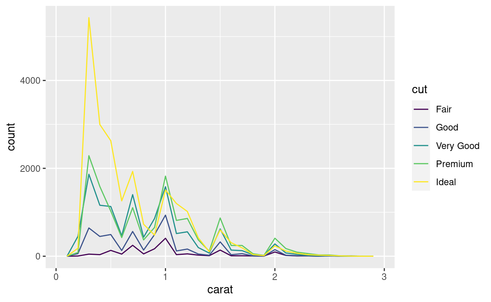
Hay algunos desafíos con este tipo de gráfico, a los que volveremos al visualizar una variable categórica y una continua.
Ahora que puede visualizar la variación, ¿qué debe buscar en sus gráficos? ¿Y qué tipo de preguntas de seguimiento debería hacer? A continuación, he elaborado una lista de los tipos de información más útiles que encontrará en sus gráficos, junto con algunas preguntas de seguimiento para cada tipo de información. La clave para hacer buenas preguntas de seguimiento será confiar en tu curiosidad (¿sobre qué quieres aprender más?) Así como en tu escepticismo (¿cómo podría ser engañoso?).
Valores típicos
Tanto en los gráficos de barras como en los histogramas, las barras altas muestran los valores comunes de una variable y las barras más cortas muestran los valores menos comunes. Los lugares que no tienen barras revelan valores que no se vieron en sus datos. Para convertir esta información en preguntas útiles, busque algo inesperado:
¿Qué valores son los más habituales? ¿Por qué?
¿Qué valores son raros? ¿Por qué? ¿Eso coincide con tus expectativas?
¿Puedes ver algún patrón inusual? ¿Qué podría explicarlos?
Como ejemplo, el histograma a continuación sugiere varias preguntas interesantes:
¿Por qué hay más diamantes de quilates enteros y fracciones comunes de quilates?
¿Por qué hay más diamantes ligeramente a la derecha de cada pico que ligeramente a la izquierda de cada pico?
¿Por qué no hay diamantes de más de 3 quilates?
ggplot(data = smaller, mapping = aes(x = carat)) +
geom_histogram(binwidth = 0.01)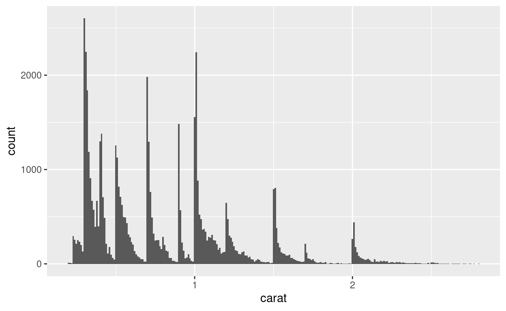
Los grupos de valores similares sugieren que existen subgrupos en sus datos. Para comprender los subgrupos, pregunte:
¿En qué se parecen las observaciones dentro de cada grupo?
¿En qué se diferencian entre sí las observaciones en grupos separados?
¿Cómo puede explicar o describir los grupos?
¿Por qué podría ser engañosa la apariencia de las agrupaciones?
El siguiente histograma muestra la duración (en minutos) de 272 erupciones del géiser Old Faithful en el Parque Nacional Yellowstone.
Los tiempos de erupción parecen agruparse en dos grupos: hay erupciones cortas (de alrededor de 2 minutos) y erupciones largas (4-5 minutos), pero poco entremedias.
ggplot(data = faithful, mapping = aes(x = eruptions)) +
geom_histogram(binwidth = 0.25)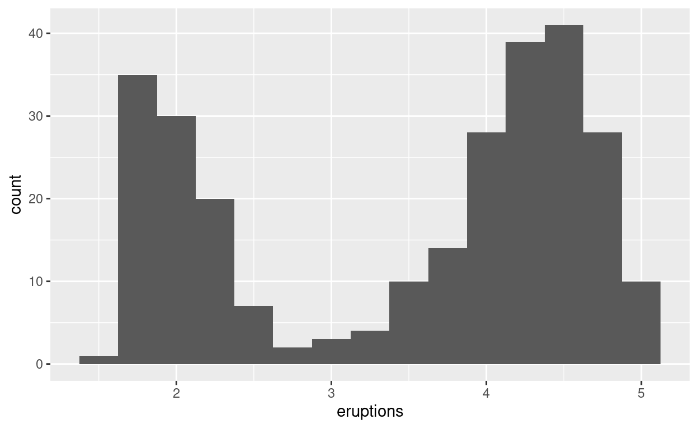
Muchas de las preguntas anteriores le ayudarán a explorar una relación entre variables, por ejemplo, para ver si los valores de una variable pueden explicar el comportamiento de otra variable. Llegaremos a eso en breve.
Valores inusuales
Los valores atípicos son observaciones que son inusuales; puntos de datos que no parecen ajustarse al patrón.
A veces, los valores atípicos son errores de entrada de datos; otras veces, los valores atípicos sugieren una nueva ciencia importante. Cuando tiene muchos datos, los valores atípicos a veces son difíciles de ver en un histograma. Por ejemplo, tome la distribución de la variable y del conjunto de datos de diamantes. La única evidencia de valores atípicos son los límites inusualmente amplios en el eje x.
ggplot(diamonds) +
geom_histogram(mapping = aes(x = y), binwidth = 0.5)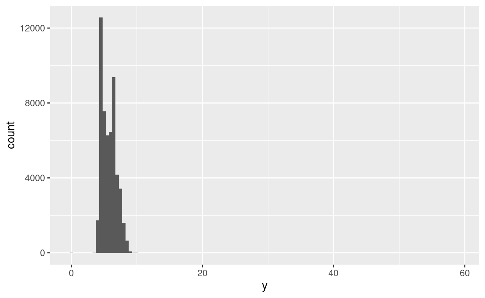
Hay tantas observaciones en los bins comunes que los bins raros son tan cortos que no puedes verlos (aunque tal vez si miras fijamente 0 verás algo). Para que sea más fácil ver los valores inusuales, necesitamos hacer zoom a valores pequeños del eje y con coord_cartesian():
ggplot(diamonds) +
geom_histogram(mapping = aes(x = y), binwidth = 0.5) +
coord_cartesian(ylim = c(0, 50))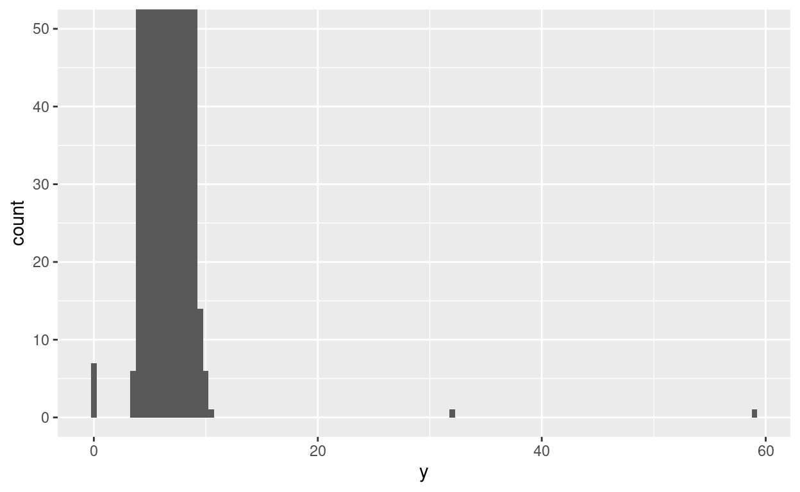 (coord_cartesian() también tiene un argumento xlim() para cuando necesita hacer zoom en el eje x.
ggplot2 también tiene funciones xlim() y ylim() que funcionan de manera ligeramente diferente: descartan los datos fuera de los límites).
Esto nos permite ver que hay tres valores inusuales: 0, ~ 30 y ~60. Los sacamos con dplyr:
unusual <- diamonds %>%
filter(y < 3 | y > 20) %>%
select(price, x, y, z) %>%
arrange(y)
unusualLa variable y mide una de las tres dimensiones de estos diamantes, en mm. Sabemos que los diamantes no pueden tener un ancho de 0 mm, por lo que estos valores deben ser incorrectos. También podríamos sospechar que las medidas de 32 mm y 59 mm son inverosímiles: esos diamantes miden más de una pulgada de largo, ¡pero no cuestan cientos de miles de dólares!
Es una buena práctica repetir su análisis con y sin valores atípicos. Si tienen un efecto mínimo en los resultados y no puede averiguar por qué están allí, es razonable reemplazarlos con los valores faltantes y seguir adelante. Sin embargo, si tienen un efecto sustancial en sus resultados, no debe descartarlos sin una justificación. Se deberá averiguar qué los causó (por ejemplo, un error de entrada de datos) y revelar que los eliminó en su informe.
Ejercicios
1 - Explore la distribución de cada una de las variables x, y y z en diamantes. ¿Qué aprendes? Piense en un diamante y en cómo podría decidir qué dimensión es la longitud, el ancho y la profundidad.
2 - Explore la distribución de price ¿Descubres algo inusual o sorprendente? (Sugerencia: piense detenidamente en el binwidth y asegúrese de probar una amplia gama de valores).
3 - ¿Cuántos diamantes son 0,99 quilates? ¿Cuántos son 1 quilate? ¿Cuál crees que es la causa de la diferencia?
4 - Compara y contraste coord_cartesian() vs xlim() o ylim() al hacer zoom en un histograma. ¿Qué sucede si deja binwidth sin configurar? ¿Qué sucede si intentas hacer zoom para que solo se muestre la mitad de una barra?
Valores perdidos
Si ha encontrado valores inusuales en su conjunto de datos y simplemente desea continuar con el resto de su análisis, tiene dos opciones.
- 1 - Suelta toda la fila con los valores extraños:
diamonds2 <- diamonds %>%
filter(between(y, 3, 20))No recomiendo esta opción porque el hecho de que una medición no sea válida no significa que todas las mediciones lo sean. Además, si tiene datos de baja calidad, cuando haya aplicado este enfoque a cada variable, es posible que no le quede ningún dato.
- 2 - En su lugar, recomiendo reemplazar los valores inusuales con valores perdidos. La forma más sencilla de hacer esto es usar
mutate()para reemplazar la variable con una copia modificada. Puede usar la funciónifelse()para reemplazar valores inusuales con NA:
diamonds2 <- diamonds %>%
mutate(y = ifelse(y < 3 | y > 20, NA, y))ifelse() tiene tres argumentos. La primera prueba de argumento debe ser un vector lógico. El resultado contendrá el valor del segundo argumento, sí, cuando la prueba sea TRUE, y el valor del tercer argumento, no, cuando sea falso. Alternativamente a ifelse, use dplyr::case_when().
case_when() es particularmente útil dentro de mutate() cuando desea crear una nueva variable que se base en una combinación compleja de variables existentes.
Al igual que R, ggplot2 se suscribe a la filosofía de que los valores perdidos nunca deben desaparecer silenciosamente. No es obvio dónde debe trazar los valores faltantes, por lo que ggplot2 no los incluye en la gáfica, pero advierte que se han eliminado:
ggplot(data = diamonds2, mapping = aes(x = x, y = y)) +
geom_point()## Warning: Removed 9 rows containing missing values (geom_point).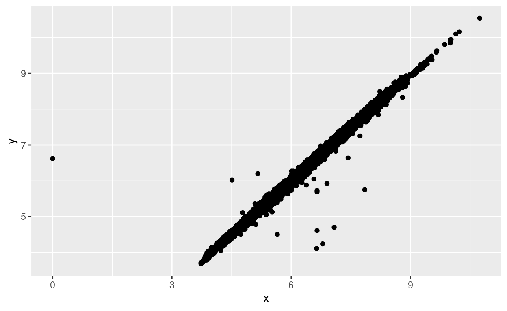
Para suprimir esa advertencia, establezca na.rm = TRUE:
ggplot(data = diamonds2, mapping = aes(x = x, y = y)) +
geom_point(na.rm = TRUE)
Otras veces, desea comprender qué hace que las observaciones con valores perdidos sean diferentes de las observaciones con valores registrados.
Por ejemplo, en nycflights13::flights, los valores faltantes en la variable dep_time indican que el vuelo fue cancelado. Por lo tanto, es posible que desee comparar los horarios de salida programados para los horarios cancelados y no cancelados. Puede hacer esto creando una nueva variable con is.na().
nycflights13::flights %>%
mutate(
cancelled = is.na(dep_time),
sched_hour = sched_dep_time %/% 100,
sched_min = sched_dep_time %% 100,
sched_dep_time = sched_hour + sched_min / 60
) %>%
ggplot(mapping = aes(sched_dep_time)) +
geom_freqpoly(mapping = aes(colour = cancelled), binwidth = 1/4)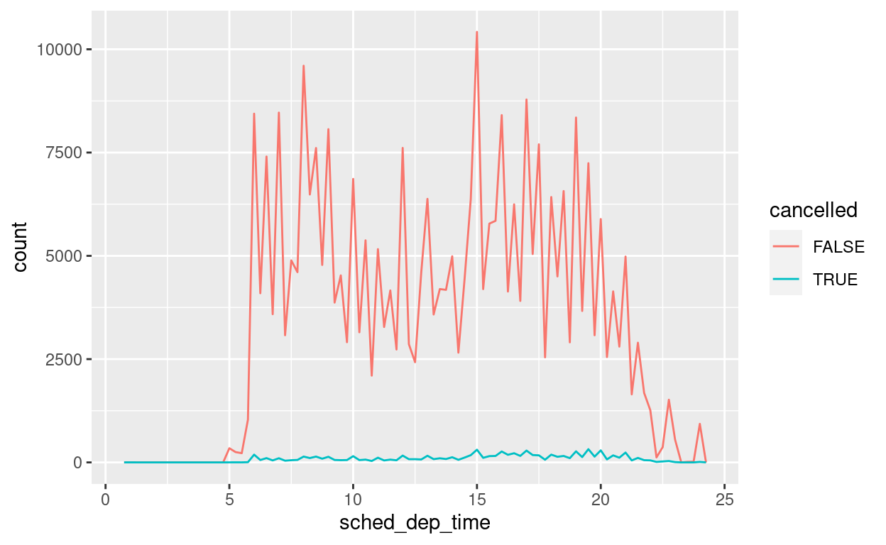
Sin embargo, esta gráfica no es muy buena porque hay muchos más vuelos no cancelados que vuelos cancelados. En la siguiente sección, exploraremos algunas técnicas para mejorar esta comparación.
Ejercicios
1 - ¿Qué sucede con los valores perdidos en un histograma? ¿Qué sucede con los valores perdidos en un gráfico de barras? ¿Por qué hay una diferencia?
2 - ¿Qué hace na.rm = TRUE en mean() y sum()?
Covariación
Si la variación describe el comportamiento dentro de una variable, la covariación describe el comportamiento entre variables.
La covariación es la tendencia a que los valores de dos o más variables varíen juntos de manera relacionada. La mejor forma de detectar la covariación es visualizar la relación entre dos o más variables.
La forma de hacerlo debería depender nuevamente del tipo de variables involucradas.
Una variable categórica y continua
Es común querer explorar la distribución de una variable continua desglosada por una variable categórica, como en el polígono de frecuencia anterior.
La apariencia predeterminada de geom_freqpoly() no es tan útil para ese tipo de comparación porque la altura viene dada por el recuento. Eso significa que si uno de los grupos es mucho más pequeño que los demás, es difícil ver las diferencias de forma. Por ejemplo, exploremos cómo varía el precio de un diamante con su calidad:
ggplot(data = diamonds, mapping = aes(x = price)) +
geom_freqpoly(mapping = aes(colour = cut), binwidth = 500)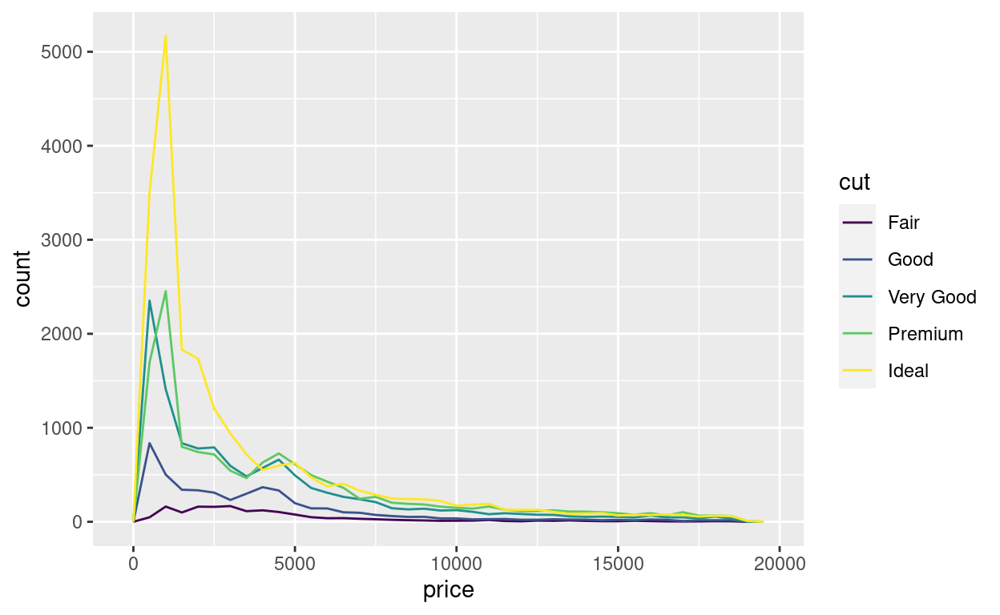
Es difícil ver la diferencia en la distribución porque los recuentos generales difieren mucho:
ggplot(diamonds) +
geom_bar(mapping = aes(x = cut))Para facilitar la comparación, debemos intercambiar lo que se muestra en el eje y. En lugar de mostrar el recuento, mostraremos la densidad, que es el recuento estandarizado para que el área debajo de cada polígono de frecuencia sea uno.
ggplot(data = diamonds, mapping = aes(x = price, y = ..density..)) +
geom_freqpoly(mapping = aes(colour = cut), binwidth = 500)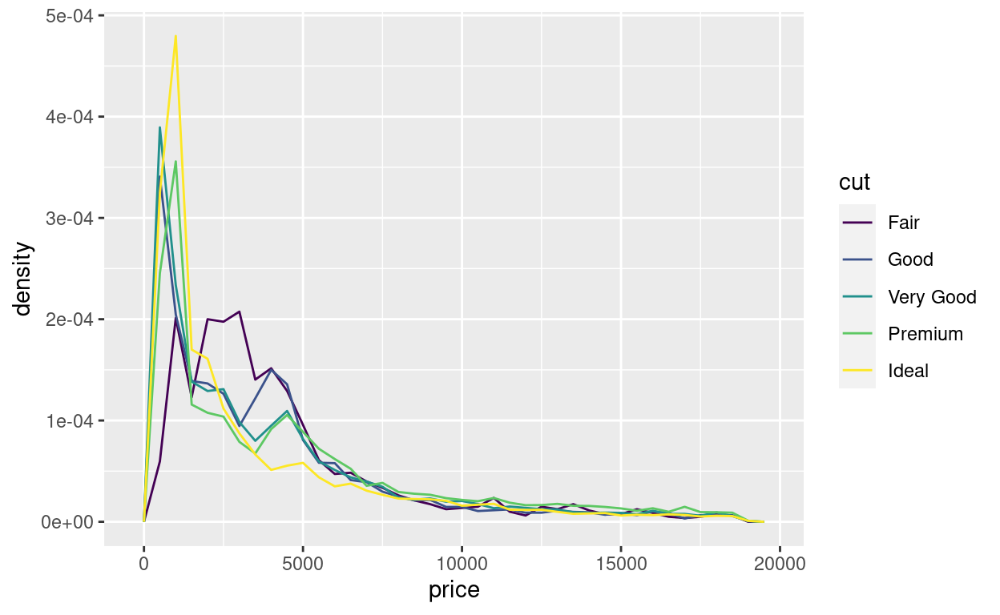
Hay algo bastante sorprendente en esta grafica: ¡parece que los diamantes blancos (la calidad más baja) tienen el precio promedio más alto! Pero tal vez eso se deba a que los polígonos de frecuencia son un poco difíciles de interpretar; están sucediendo muchas cosas en esta gráfica.
Otra alternativa para mostrar la distribución de una variable continua desglosada por una variable categórica es la gráfica de caja. Un diagrama de caja es un tipo de abreviatura visual para una distribución de valores que es popular entre los estadísticos. Cada diagrama de caja consta de:
Una caja que se extiende desde el percentil 25 de la distribución hasta el percentil 75, una distancia conocida como rango intercuartílico (IQR). En el medio del cuadro hay una línea que muestra la mediana, es decir, el percentil 50, de la distribución. Estas tres líneas le dan una idea de la extensión de la distribución y si la distribución es simétrica con respecto a la mediana o está sesgada hacia un lado.
Puntos visuales que muestran observaciones que caen más de 1.5 veces el IQR desde cualquier borde de la caja. Estos puntos periféricos son inusuales, por lo que se trazan individualmente.
Una línea (o bigote) que se extiende desde cada extremo de la caja y va al punto no atípico más lejano de la distribución

Echemos un vistazo a la distribución del precio por corte usando geom_boxplot():
ggplot(data = diamonds, mapping = aes(x = cut, y = price)) +
geom_boxplot()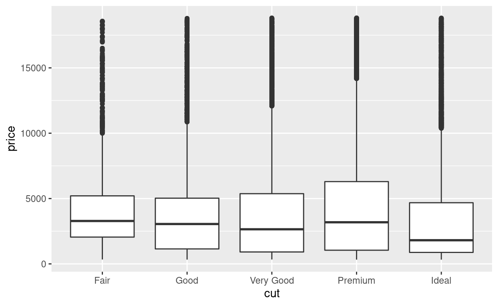
Vemos mucha menos información sobre la distribución, pero los diagramas de caja son mucho más compactos, por lo que podemos compararlos más fácilmente (y encajar más en un diagrama).
¡Apoya el hallazgo contrario a la intuición de que los diamantes de mejor calidad son más baratos en promedio! En los ejercicios, se le pedirá que averigüe por qué.
La variable cut es un factor ordenado: justo es peor que bueno, que es peor que muy bueno, etc. Muchas variables categóricas no tienen un orden tan intrínseco, por lo que es posible que desee reordenarlas para hacer una visualización más informativa. Una forma de hacerlo es con la función forcats::reorder().
Por ejemplo, tome la variable de clase en el conjunto de datos mpg. Es posible que le interese saber cómo varía el kilometraje de la carretera entre las clases:
ggplot(data = mpg, mapping = aes(x = class, y = hwy)) +
geom_boxplot()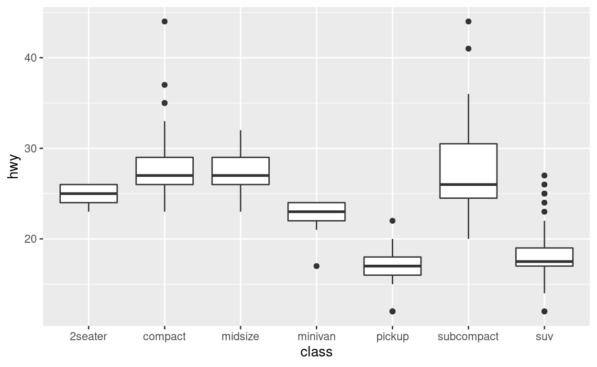
Para que la tendencia sea más fácil de ver, podemos reordenar la clase según el valor mediano de hwy:
ggplot(data = mpg) +
geom_boxplot(mapping = aes(x = reorder(class, hwy, FUN = median), y = hwy))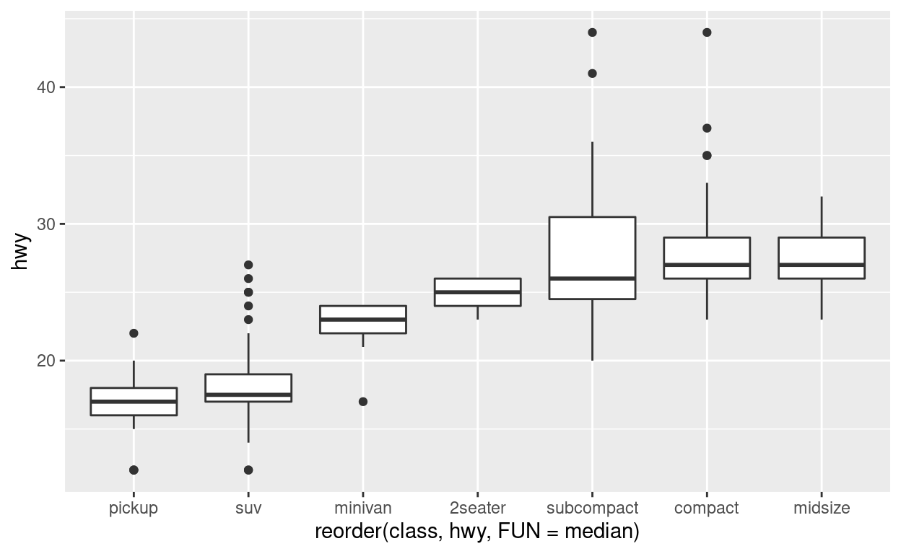
Si tiene nombres de variables largos, geom_boxplot() funcionará mejor si lo giras 90°. Puedes hacerlo con coord_flip().
ggplot(data = mpg) +
geom_boxplot(mapping = aes(x = reorder(class, hwy, FUN = median), y = hwy)) +
coord_flip()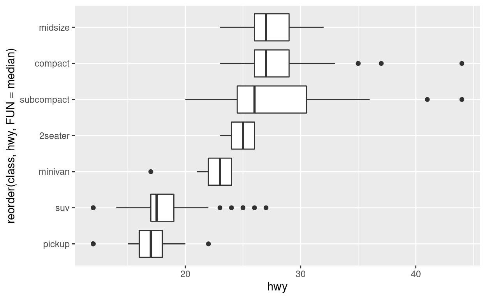
Ejercicios
1 - Utilice lo que ha aprendido para mejorar la visualización de las horas de salida de los vuelos cancelados frente a los no cancelados.
2 - ¿Qué variable del conjunto de datos de diamonds es más importante para predecir el precio de un diamante? ¿Cómo se correlaciona esa variable con cut? ¿Por qué la combinación de esas dos relaciones hace que los diamantes de menor calidad sean más caros?
3 - Instale el paquete ggstance y cree un diagrama de caja horizontal. ¿Cómo se compara esto con el uso de coord_flip()?
4 - Un problema con los diagramas de caja es que se desarrollaron en una era de conjuntos de datos mucho más pequeños y tienden a mostrar una cantidad prohibitivamente grande de “valores periféricos”. Un enfoque para remediar este problema es la gráfica del valor de las letras. Instale el paquete lvplot e intente usar geom_lv() para mostrar la distribución de precio frente a corte. ¿Qué aprendes? ¿Cómo interpretas las gráficas?
5 - Compare y contraste geom_violin() con un geom_histogram() facetado, o un geom_freqpoly() de color. ¿Cuáles son los pros y los contras de cada método?
6 - Si tiene un conjunto de datos pequeño, a veces es útil usar geom_jitter() para ver la relación entre una variable continua y categórica. El paquete ggbeeswarm proporciona varios métodos similares a geom_jitter(). Enumere y describa brevemente lo que hace cada uno.
Dos variables categóricas
Para visualizar la covariación entre variables categóricas, deberá contar el número de observaciones para cada combinación. Una forma de hacerlo es confiar en el geom_count() incorporado:
ggplot(data = diamonds) +
geom_count(mapping = aes(x = cut, y = color))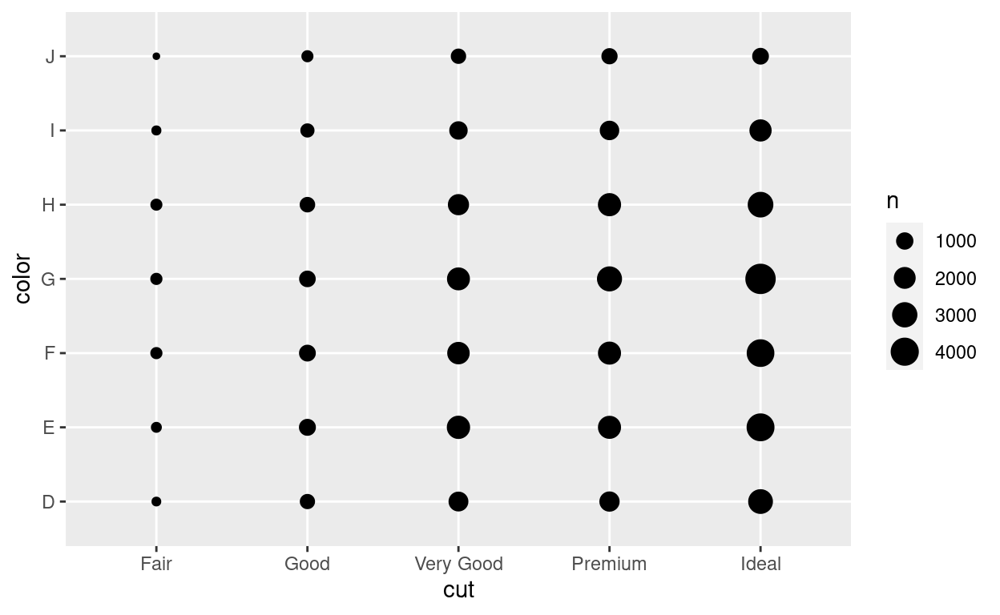
El tamaño de cada círculo en la gráfica muestra cuántas observaciones ocurrieron en cada combinación de valores. La covariación aparecerá como una fuerte correlación entre valores x específicos y valores y específicos.
Otro enfoque es calcular el recuento con dplyr:
diamonds %>%
count(color, cut)Luego visualice con geom_tile() y la estética de relleno:
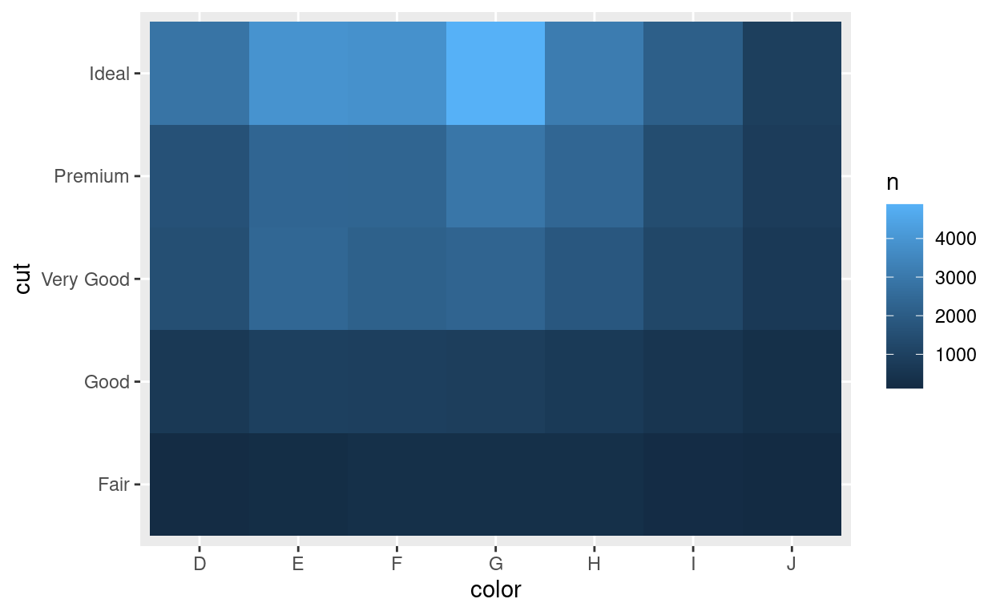
Si las variables categóricas no están ordenadas, es posible que desee utilizar el paquete de seriación para reordenar simultáneamente las filas y columnas a fin de revelar más claramente patrones interesantes. Para gráficos más grandes, es posible que desee probar los paquetes d3heatmap o heatmaply, que crean gráficos interactivos.
Ejercicios
1 - ¿Cómo podría cambiar la escala del conjunto de datos de conteo anterior para mostrar más claramente la distribución del corte dentro del color o el color dentro del corte?
2 - Utilice geom_tile() junto con dplyr para explorar cómo las demoras promedio de los vuelos varían según el destino y el mes del año. ¿Qué hace que la grafica sea difícil de leer? ¿Cómo podrías mejorarlo?
3 - ¿Por qué es un poco mejor usar aes(x = color, y = cut) en lugar de aes(x = cut, y = color) en el ejemplo anterior?
Dos variables continuas
Ya ha visto una excelente manera de visualizar la covariación entre dos variables continuas: dibujar un diagrama de dispersión con geom_point(). Puede ver la covariación como un patrón en los puntos.
Por ejemplo, puede ver una relación exponencial entre el tamaño en quilates y el precio de un diamante.
ggplot(data = diamonds) +
geom_point(mapping = aes(x = carat, y = price))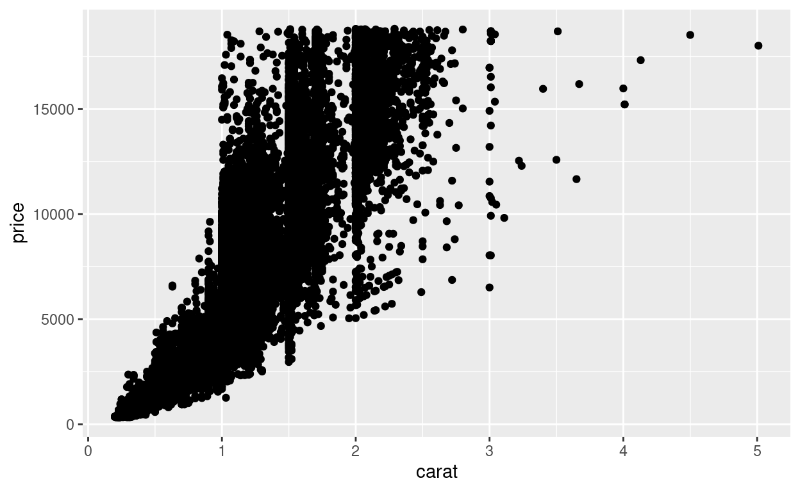
Los diagramas de dispersión (Scatterplots) se vuelven menos útiles a medida que aumenta el tamaño de su conjunto de datos, porque los puntos comienzan a trazarse en exceso y se acumulan en áreas de negro uniforme (como se muestra arriba). Ya ha visto una forma de solucionar el problema: usar la estética alfa para agregar transparencia.
ggplot(data = diamonds) +
geom_point(mapping = aes(x = carat, y = price), alpha = 1 / 100)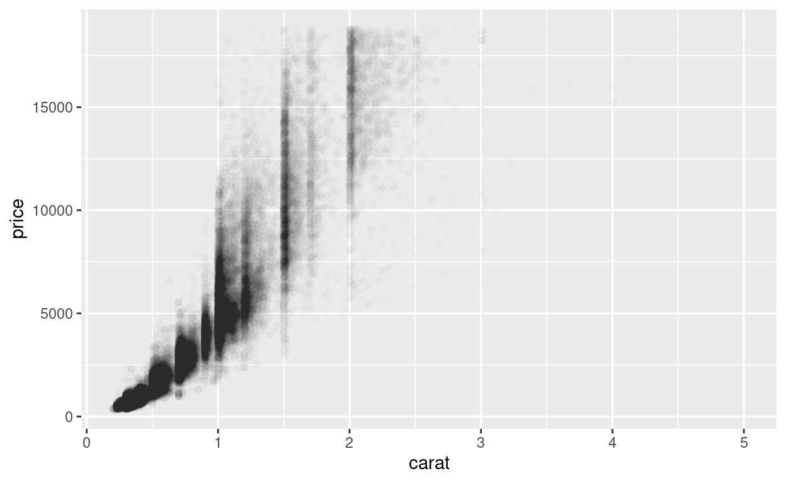
Pero el uso de la transparencia puede ser un desafío para conjuntos de datos muy grandes. Otra solución es usar bin. Anteriormente, usó geom_histogram() y geom_freqpoly() para agrupar en una dimensión. Ahora aprenderá a usar geom_bin2d() y geom_hex() para agrupar en dos dimensiones.
geom_bin2d() y geom_hex() dividen el plano de coordenadas en bins 2d y luego usan un color de relleno para mostrar cuántos puntos caen en cada bin. geom_bin2d() crea bins rectangulares, geom_hex() crea contenedores hexagonales. Necesitará instalar el paquete hexbin para usar geom_hex().
ggplot(data = smaller) +
geom_bin2d(mapping = aes(x = carat, y = price))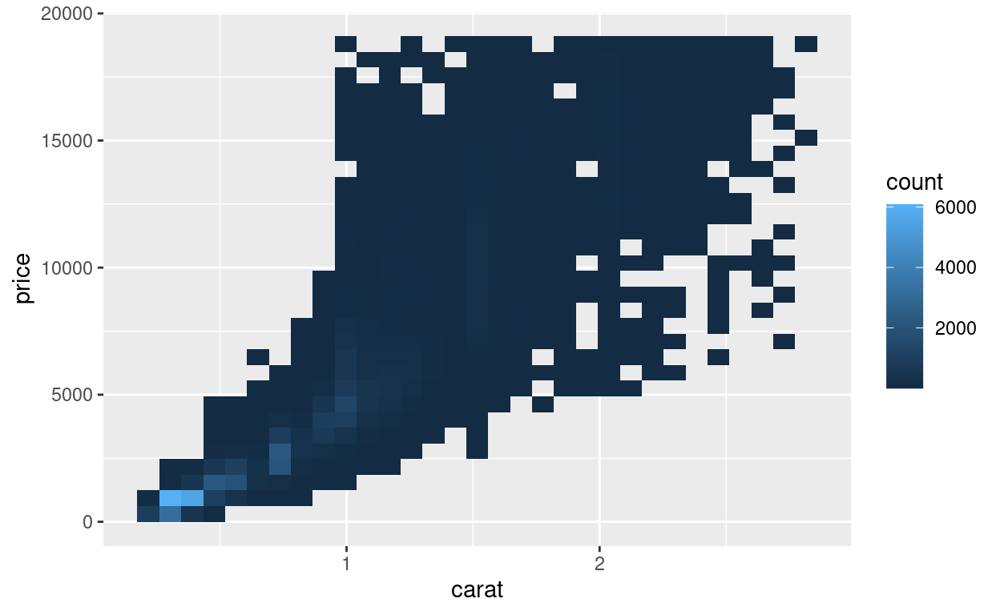
library(hexbin)
ggplot(data = smaller) +
geom_hex(mapping = aes(x = carat, y = price))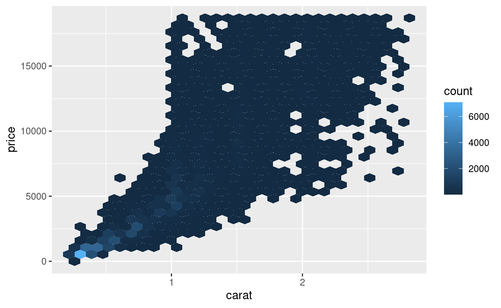
Otra opción es agrupar una variable continua para que actúe como una variable categórica. Luego, puede usar una de las técnicas para visualizar la combinación de una variable categórica y una continua que aprendió. Por ejemplo, puede agrupar carat y luego, para cada grupo, mostrar una gráfica de caja:
ggplot(data = smaller, mapping = aes(x = carat, y = price)) +
geom_boxplot(mapping = aes(group = cut_width(carat, 0.1)))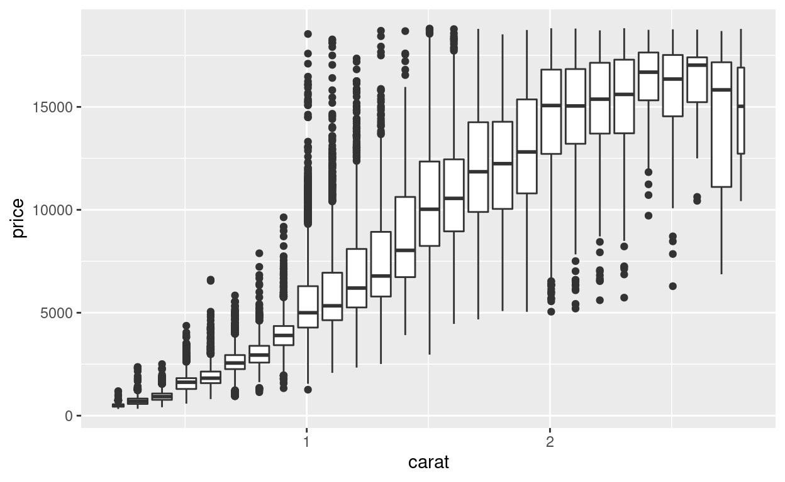
cut_width(x, width), como se usó anteriormente, divide x en contenedores de anchi width.
De forma predeterminada, los diagramas de caja se ven aproximadamente iguales (aparte del número de valores atípicos) independientemente de la cantidad de observaciones que haya, por lo que es difícil saber que cada diagrama de caja resume un número diferente de puntos. Una forma de demostrarlo es hacer que el ancho de la gráfica de caja sea proporcional al número de puntos con varwidth = TRUE.
Otro enfoque es mostrar aproximadamente el mismo número de puntos en cada contenedor. Ese es el trabajo de cut_number():
ggplot(data = smaller, mapping = aes(x = carat, y = price)) +
geom_boxplot(mapping = aes(group = cut_number(carat, 20)))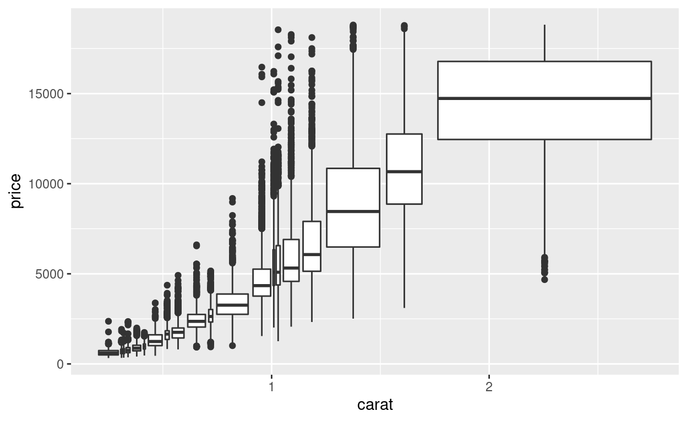
Ejercicios
1 - En lugar de resumir la distribución condicional con una gráfica de caja, podría usar un polígono de frecuencia. ¿Qué debe tener en cuenta al usar cut_width() vs cut_number()? ¿Cómo afecta eso a la visualización de la distribución 2d de carat y price?
2 - Visualice la distribución de carat, dividida por price.
3 - ¿Cómo se compara la distribución de precios de los diamantes muy grandes con la de los diamantes pequeños? ¿Es como esperabas o te sorprende?
4 - Combine dos de las técnicas que ha aprendido para visualizar la distribución combinada de cut, carat y price.
5 - Los gráficos bidimensionales revelan valores atípicos que no son visibles en los gráficos unidimensionales. Por ejemplo, algunos puntos en la gráfica siguiente tienen una combinación inusual de valores x e y, lo que hace que los puntos sean atípicos aunque sus valores xey parezcan normales cuando se examinan por separado.
ggplot(data = diamonds) +
geom_point(mapping = aes(x = x, y = y)) +
coord_cartesian(xlim = c(4, 11), ylim = c(4, 11))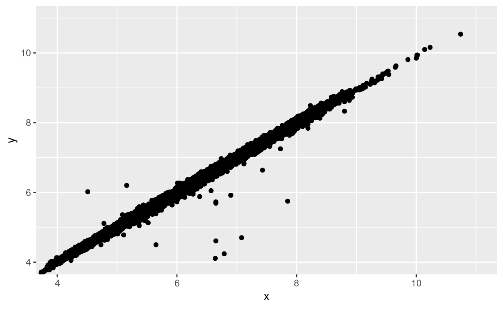
Patrones y modelos
Los patrones en sus datos proporcionan pistas sobre las relaciones. Si existe una relación sistemática entre dos variables, aparecerá como un patrón en los datos. Si detecta un patrón, pregúntate:
¿Podría este patrón deberse a una coincidencia (es decir, al azar)?
¿Cómo puede describir la relación implícita en el patrón?
¿Qué tan fuerte es la relación implícita en el patrón?
¿Qué otras variables pueden afectar la relación?
¿Cambia la relación si observa subgrupos individuales de datos?
Un diagrama de dispersión (scatterplot) de la duración de las erupciones Old Faithful versus el tiempo de espera entre erupciones muestra un patrón: los tiempos de espera más largos se asocian con erupciones más largas. La gráfica de dispersión también muestra los dos grupos que notamos arriba.
ggplot(data = faithful) +
geom_point(mapping = aes(x = eruptions, y = waiting))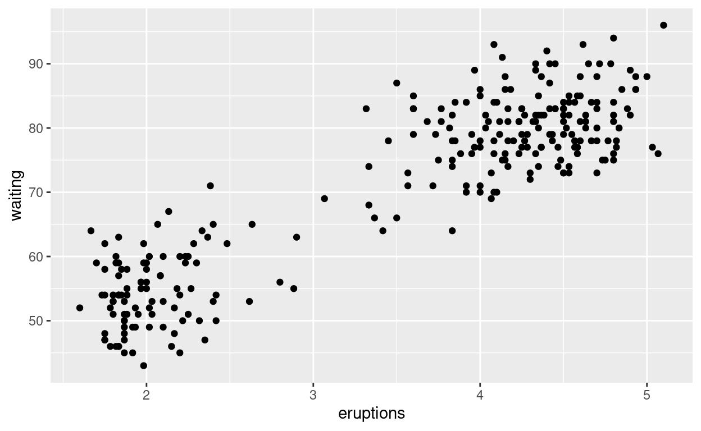
Los patrones proporcionan una de las herramientas más útiles para los científicos de datos porque revelan la covariación. Si piensa en la variación como un fenómeno que crea incertidumbre, la covariación es un fenómeno que la reduce.
Si dos variables covarían, puede usar los valores de una variable para hacer mejores predicciones sobre los valores de la segunda. Si la covariación se debe a una relación causal (un caso especial), puede usar el valor de una variable para controlar el valor de la segunda.
Los modelos son una herramienta para extraer patrones de datos.
Por ejemplo, considere los datos de los diamantes. Es difícil entender la relación entre cut y price, porque cut y carat, y carat y price están estrechamente relacionados.
Es posible utilizar un modelo para eliminar la relación muy fuerte entre precio y quilates para que podamos explorar las sutilezas que quedan. El siguiente código se ajusta a un modelo que predice el precio en quilates y luego calcula los residuos (la diferencia entre el valor predicho y el valor real). Los residuos nos dan una idea del precio del diamante, una vez eliminado el efecto de carat.
library(modelr)
mod <- lm(log(price) ~ log(carat), data = diamonds)
diamonds2 <- diamonds %>%
add_residuals(mod) %>%
mutate(resid = exp(resid))
ggplot(data = diamonds2) +
geom_point(mapping = aes(x = carat, y = resid))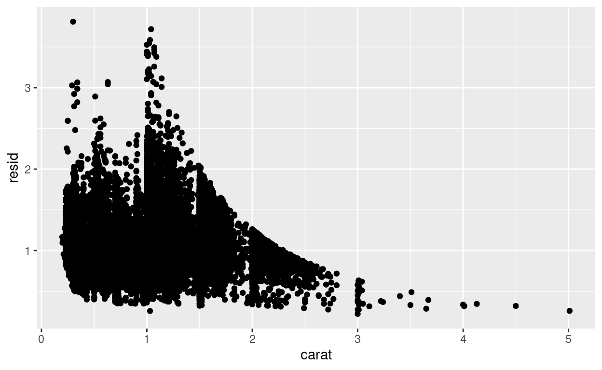
Una vez que hayas eliminado la fuerte relación entre carat y price, podrá ver lo que espera en la relación entre cut y price: en relación con su tamaño, los diamantes de mejor calidad son más caros.
ggplot(data = diamonds2) +
geom_boxplot(mapping = aes(x = cut, y = resid))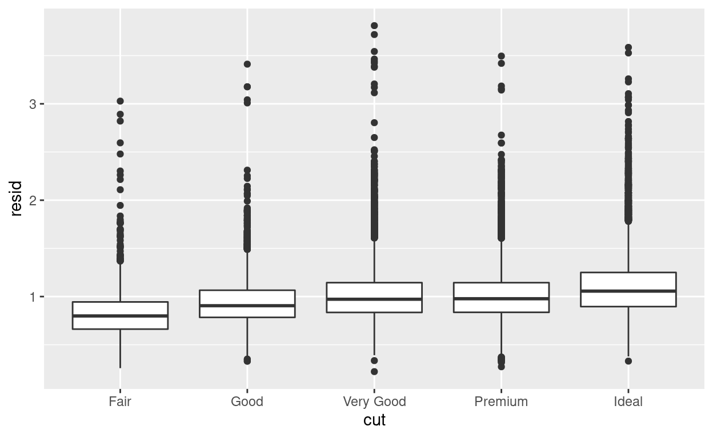
Estamos guardando el modelado para más adelante porque comprender qué son los modelos y cómo funcionan es más fácil una vez que tenga a mano las herramientas de programación y manejo de datos.
Llamadas ggplot2
A medida que avanzamos en estos clases introductorias, pasaremos a una expresión más concisa del código ggplot2. Hasta ahora hemos sido muy explícitos, lo que es útil cuando está aprendiendo:
ggplot(data = faithful, mapping = aes(x = eruptions)) +
geom_freqpoly(binwidth = 0.25)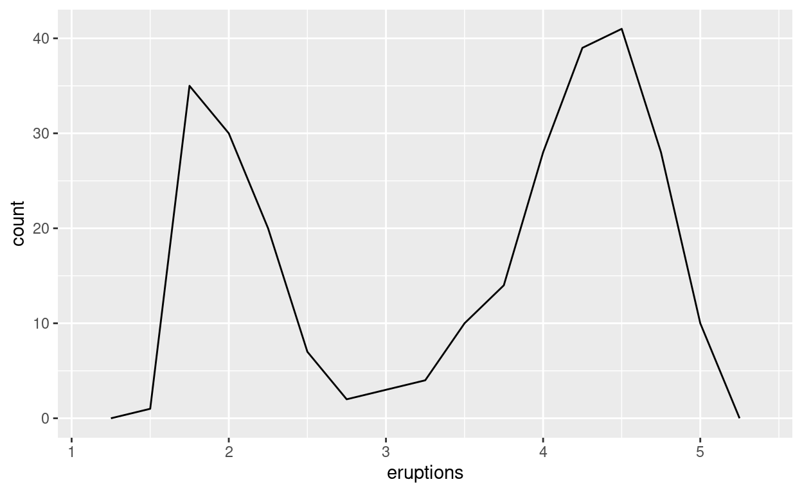
Normalmente, los primeros uno o dos argumentos de una función son tan importantes que debería conocerlos de memoria. Los dos primeros argumentos de ggplot() son datos y mapeo, y los dos primeros argumentos de aes() son x e y.
En las siguientes clases no proporcionaremos esos nombres. Eso ahorra mecanografía y, al reducir la cantidad de texto repetitivo, hace que sea más fácil ver las diferencias entre las grádicas. Esa es una preocupación de programación realmente importante que volveremos en funciones.
Reescribir la gráfica anterior de manera más concisa produce:
ggplot(faithful, aes(eruptions)) +
geom_freqpoly(binwidth = 0.25)
A veces, convertiremos el final de un proceso de transformación de datos en una gráfica. Esté atento a la transición de %>% a +.
Desearía que esta transición no fuera necesaria, pero desafortunadamente ggplot2 se creó antes de que se descubriera el operador pipe.
diamonds %>%
count(cut, clarity) %>%
ggplot(aes(clarity, cut, fill = n)) +
geom_tile()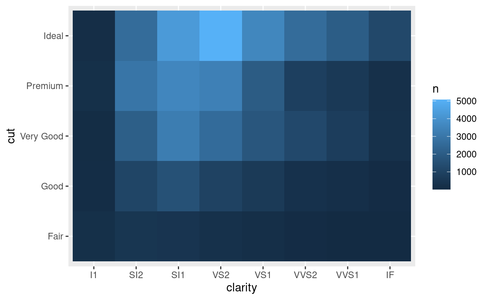
Realizar Ejercicios
Material de referencia
Hadley Wickham y Garrett Grolemund, “R for Data Science: Import, Tidy, Transform, Visualize, and Model Data” O’REILLY R for Data Science
Enviar hash al siguiente link -> Aqui